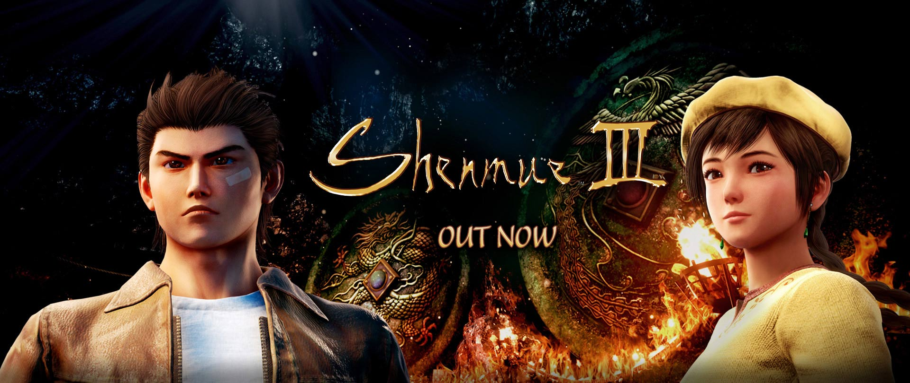

Shenmue III – Ein Prügelspiel, wo Nostalgie Gameplay schlägt
Über 17 Jahre nach der Veröffentlichung des Vorgängers „Shenmue II“ legen YSNET und Neilo mit dem Nachfolger nach und präsentieren dem Fan ein in erster Linie durch Crowdfunding ermöglichtes brandneues Prügel-Adventure – und bleiben trotz des technischen Fortschritts erstaunlich nah bei den Wurzeln.
Sowohl seitens der Story her, die direkt an den Cliffhänger des zweiten Teils anschließt, als auch von der Grafik her, die keine wirklichen Sprünge getan hat. Ryo Hazuki sucht weiter den Mörder seines Vaters und gelangt diesmal an die Seite der schönen Shenhua und in das Dorf Bailu. Insgesamt zieht sich die Story genau wie in den Vorgängerteilen und der Spieler muss viel Sitzfleisch (bis zu über 30 Spielstunden) mitbringen, um überhaupt Höhepunkte oder gar zugegeben das sehr spektakuläre Finale zu sehen. Während AAA-Titel um die Pixel und gewaltige Maps buhlen, blieb Shenmue III erheblich beschränkter was den Look angeht. Indie-Fans und Spieler der Vorgänger-Titel mögen sich aus nostalgischer Perspektive von den unsichtbaren Wänden und der oberflächlichen Anmutung eines PS2-Titels angezogen fühlen, für den Newcomer ist das allerdings auf diese Spieldauer abgebildet zuweilen eine Nervenprobe. Auch das Quest-Design, dass oft im „Lauf von da nach da“-Stil daherkommt, Barrieren durch Ingame-Währung und brüchige Dialoge, die wie mit dem Fuss geschrieben wirken, lassen häufig die guten Kampfsequenzen verblassen
gegenüber gelangweiltem Knopf-Gedrücke im Alltag von Ryo. Shenmue III hat zumindest das Kampfsystem der Vorgänger weiter ausgebaut: Ein erfreulich großes Move-Set, mit Tastenkombinationen die teils an Streetfighter erinnern, ein AusdauerSystem, dass Planung im sonst öden Alltag mit Kampffertigkeit verbindet und ein reflexartiges Block-System a la Sekiro versprechen zumindest einige Momente schwitziger Finger, vor allem auf den oberen Schwierigkeitsgraden. Die Fahrt wird durch die gelegentlichen Quicktime-Events allerdings eher wieder herausgenommen aus den Kämpfen anstatt beschleunigt, da die Zeitfenster hier selbst für geübte Spieler deutlich zu bemessen scheinen.
Alles in allem kann man ob des Budgets der Entwickler nicht allzu lange Klagen über die Grafik. Die Beteiligung des Crowdfundings, altbekannte Synchro-Sprecher und der zeitliche Abstand des Titels zum Vorgänger haben bereits ein fan-orientiertes Game vermuten lassen. Allerdings der ein oder andere wiederholte Dialog und der wenig abwechslungsreiche Alltag hätte so nicht sein müssen, auch für Fans. Aber trotz Rucklern erlebt man regelrechte Flows beim Kämpfen. Und auch der Soundtrack ist wie gewohnt geradezu idyllisch und die optischen Details trotz veralteter Grafik vorhanden. Das lässt über gelegentliche Langeweile schnell hinwegsehen und verleiht Shenmue III wie den Vorgängern sein einzigartiges Indie-Gefühl beim Zocken.